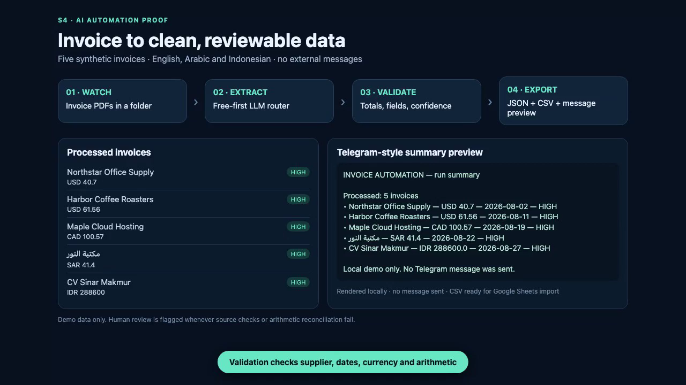
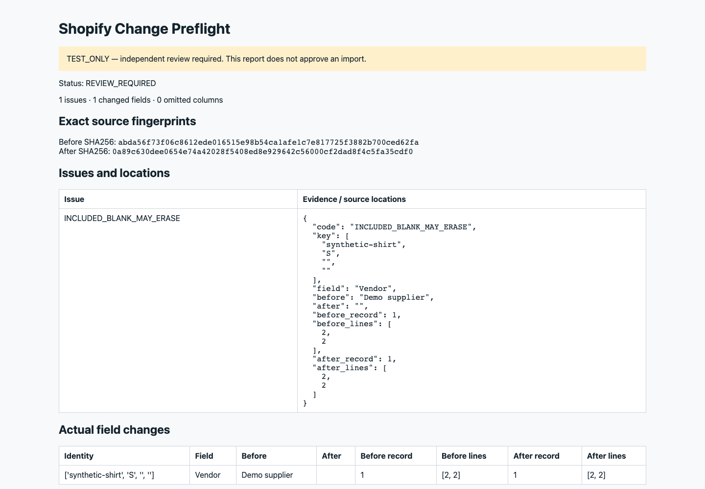
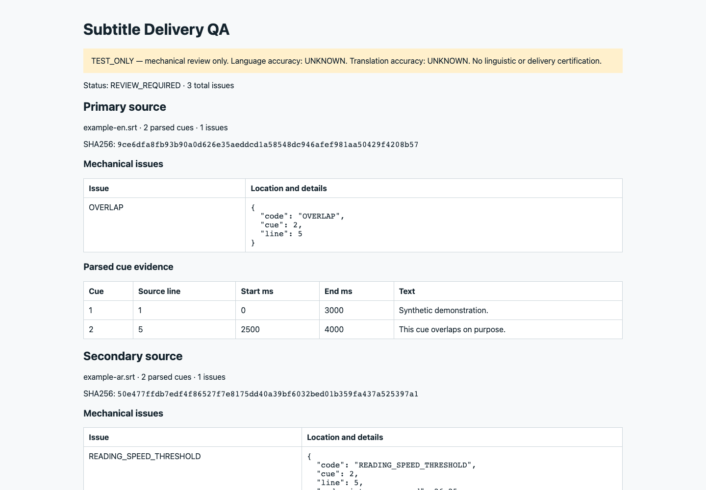

Git Changelog Starter
A Python script and agent skill for turning local Git history into a release-note draft you review before publishing.
- Local, inspectable source
- Sample output and tests
- No paid model required
I build research, documents and practical AI-enabled operations. These downloadable tools share the same principle: inspectable mechanics, clear limits and a human in the decision.
A Python script and agent skill for turning local Git history into a release-note draft you review before publishing.
A standalone Python kit for extracting candidate rows from text-based digital invoices with your own compatible model endpoint.
These listings are tools, not case studies or customer-result claims. Check each product page for scope, setup, license and limitations before purchase.
These screenshots show internal demonstrations with sample or synthetic inputs. They are not customer outcomes or ready-to-buy products.

Candidate extraction, source comparison and human approval before export.

Structured checks for product information and review-ready corrections.

Review of timing, text and handoff for multilingual content.